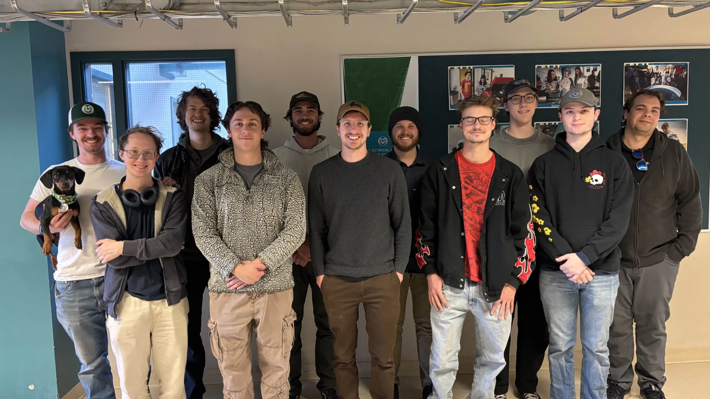

Abstract
We are a team of senior Electrical and Computer Engineers and underclassmen who are using
modern technologies to
showcase high levels of applied fundamental problem solving to prospective students. The
highly
technical Ekart demonstrates the seamless integration of various core concepts from each of
the
engineering departments. The electrical engineers incorporate their skills of wiring and
coding
to the cart through the addition of electric powered motors that are controlled using
python.
The computer engineers bring new and improved topics like integrating machine learning with
autonomous pedestrian recognition. The computer engineers and electrical engineers work
closely
together to ensure successful communication between the computer and the components of the
cart.
The mechanicals bring their experience of design and machining to create a stable body to
house
the electrical and computer components. Mechanicals also assemble the cart to improve the
overall
functionality and aesthetic of the electric cart. Together, all of the engineering
concentrations
work together to ensure the safety of both the cart and the rider. This years team is moving
forward
with taking on the immense task of recovering and rebuilding the Ekart with all the legacy
documentation and with updated safety features and considerations.
Importance
This is an ECE Outreach project meant to showcase some of the capabilities of engineering to potential future students. The E-kart contains various examples of how different engineering fields come together in order to create a functioning machine. Seeing how these different expertises are implemented together may inspire or spark interest in those who are considering engineering as a career path. This project has the capability of catching the eye of people from elementary school up to high school and beyond.
Design Goals
- Migrate Dashboard UI to Qt Creator for cross-compilation and faster testing
- Redesign Rear Axle and Chassis for increased structural rigidity
- Identify and eliminate mechanical play in the Steering Shaft
- Replace the Master Cylinder to ensure reliable braking performance
- Implement a robust wiring harness with integrated E-Stop and fuses
- Verify CAN communication between VESC controllers and Dashboard


 Full
Build
Full
Build